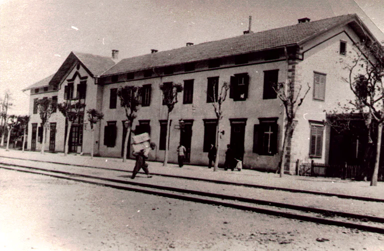
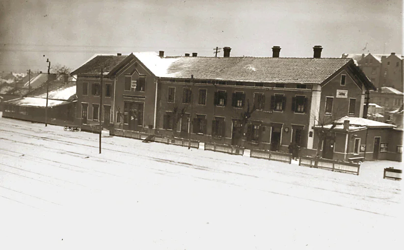

Vlak stiže
- Scenarij i režija
- Trajče Popov
- Snimatelj
- Branko Mihajlovski
- Godina
- 1951
- Trajanje
- 00:09

Stari željeznički kolodvor s kraja 19. stoljeća. Izgrađen je 1873. godine u doba Osmanskog Carstva. Na razglednici se vidi glavni ulaz kolodvora, a iza su se nalazile željezničke pruge. Arhitektura nosi obilježja neoklasičnog stila. U prednjem planu je prodavačica mliječnih proizvoda.

Stari željeznički kolodvor s kraja 19. stoljeća. Izgrađen je 1873. godine u doba Osmanskog Carstva. Na razglednici se vidi glavni ulaz kolodvora, a iza su se nalazile željezničke pruge. Arhitektura nosi obilježja neoklasičnog stila.

Prvi željeznički kolodvor. Snimljen sa stražnje strane. (početak 20. stoljeća)

Stari željeznički kolodvor, sa stražnje strane. (početak 20. stoljeća)

„Novi željeznički kolodvor“ počeo se graditi 1937. godine. 1. prosinca 1940. predan je na uporabu, iako peron nije bio dovršen, a radovi na oblikovanju stupova bili su nedovršeni. Odlikuje se primjenom modernih oblika i interpretacijom bizantskih, romantičarskih i folklornih oblika. Tijekom katastrofalnog potresa 26. srpnja 1963. srušile su se 2/3 zgrade. Preostala 1/3 je sanirana i u njoj je smješten današnji Muzej grada Skoplja. Danas je ova zgrada spomenik katastrofalnom potresu od 26. srpnja 1963. Zaustavljeni sat iznad ulaza u Muzej grada Skoplja pokazuje 05 sati i 17 minuta, tragični trenutak od 26. srpnja 1963.

Željeznički kolodvor za vrijeme Drugoga svjetskog rata.

Željeznički kolodvor nakon Drugoga svjetskog rata (današnji Muzej grada Skoplja), sa strane glavnog ulaza.

Željeznički kolodvor nakon Drugoga svjetskog rata (današnji Muzej grada Skoplja), sa strane perona.

Peron željezničkog kolodvora - 1940. godina.

Željeznički kolodvor u izgradnji - snimljen sa stražnje strane - 1940-ih.

Željeznički kolodvor u izgradnji - snimljen s prednje strane - 1940-ih.

Razglednica-kolaž na kojoj je kroz četiri fotografije prikazana povijest željezničkih kolodvora u Skoplju.

Novi prometni centar. (1980-ih)


 Akvadukt4 razglednice
Akvadukt4 razglednice Kale30 razglednica
Kale30 razglednica Mostovi60 razglednica
Mostovi60 razglednica Kej58 razglednica
Kej58 razglednica Trg46 razglednica
Trg46 razglednica Građevine66 razglednica
Građevine66 razglednica Kršćanski hramovi19 razglednica
Kršćanski hramovi19 razglednica Muslimanske građevine33 razglednice
Muslimanske građevine33 razglednice Časnički dom29 razglednica
Časnički dom29 razglednica Kazalište28 razglednica
Kazalište28 razglednica Željeznički kolodvor13 razglednica
Željeznički kolodvor13 razglednica Škole36 razglednica
Škole36 razglednica Parkovi12 razglednica
Parkovi12 razglednica Tržnice18 razglednica
Tržnice18 razglednica Ulice38 razglednica
Ulice38 razglednica Panorama I60 razglednica
Panorama I60 razglednica Panorama II30 razglednica
Panorama II30 razglednica Kolaži55 razglednica
Kolaži55 razglednica Poplave9 razglednica
Poplave9 razglednica Potres27 razglednica
Potres27 razglednica Skoplje 2000.26 razglednica
Skoplje 2000.26 razglednica